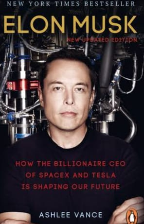
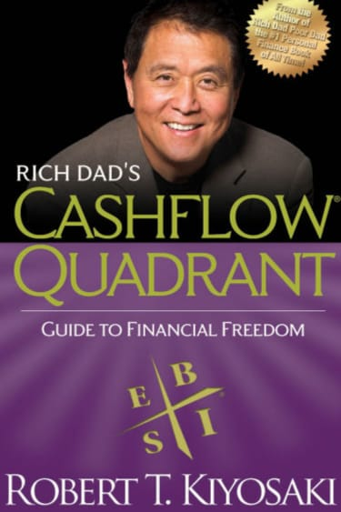

Reading plays a big role in shaping how I think and approach life. These two books —
“Elon Musk: Tesla, SpaceX, and the Quest for a Fantastic Future”
by Ashlee Vance and “Rich Dad’s Cashflow Quadrant” by Robert T. Kiyosaki —
have influenced the way I view innovation, entrepreneurship, and financial independence.
Elon Musk

By Ashlee Vance
Why I like it: It’s an inspiring look into the mindset and drive of Elon Musk.
The book shows how passion and persistence can turn bold ideas into reality — from Tesla to SpaceX.
Author: Ashlee Vance
Genre: Biography / Technology
Lesson: Innovation and resilience can change the world.
Rich Dad’s Cashflow Quadrant

By Robert T. Kiyosaki
Why I like it: The book helps explain how people earn and manage money differently.
It motivates me to think like an investor and focus on financial freedom instead of job security.
Author: Robert T. Kiyosaki
Genre: Finance / Self-Improvement
Lesson: Build assets, not just income.
Want to explore more about these authors? Visit
Goodreads
to find reviews and recommendations.